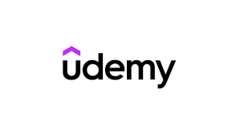

Aqui sera listado todos os sites aonde você pode obter um certificado valido, aumentando suas chances de
sucesso no mercado de trabalho.
Seu currículo é o seu cartão de visitas no mercado de trabalho. Quer um emprego bacana? Então, precisa
de um currículo top!
Concorrência: Todo mundo quer uma vaga legal.
Primeira impressão: É a sua cara para o recrutador.
Mais chances de entrevista: Um currículo legal chama mais atenção.
Dicas rápidas:
Seja direto: Vá direto ao ponto.
Use palavras-chave: As empresas usam computador para encontrar os melhores currículos.
Mostre seus resultados: Não só o que fez, mas o que conquistou.
Adapte para cada vaga: Cada emprego é diferente, seu currículo também.
Revise tudo direitinho: Sem erros de português!
Quer aprender mais?
Tem vários cursos por aí que te ensinam a fazer um currículo incrível.
Não perca tempo!
Aqui estão alguns sites aonde você encontrara cursos gratuitos e de facil conclusão
- Coursera: Uma das plataformas mais conhecidas, com cursos de diversas universidades e empresas de renome
mundial
- edX: Outra plataforma de grande porte, com cursos de universidades como Harvard, MIT e Berkeley.

- Udemy: Oferece uma grande variedade de cursos, desde programação até desenvolvimento pessoal, com muitas
opções gratuitas

- Khan Academy: Focada em cursos de matemática, ciências e humanidades, com um modelo de aprendizagem
adaptativo
- Duolingo: Especializada em cursos de idiomas, com um método de aprendizado divertido e eficaz
- Fundação Bradesco: Já mencionada, oferece cursos em diversas áreas, como gestão, tecnologia e
desenvolvimento pessoal
- Veduca: Plataforma brasileira com cursos de diversas instituições de ensino, incluindo universidades
e empresas
- Google Digital Garage: Oferece cursos gratuitos sobre marketing digital e ferramentas do Google

- Microsoft Learn: Plataforma da Microsoft com cursos sobre diversas tecnologias, como Azure, Power BI e .NET
,